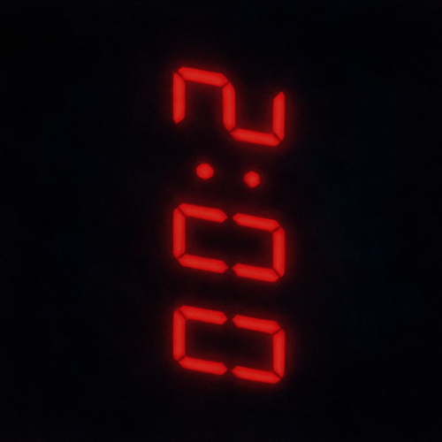
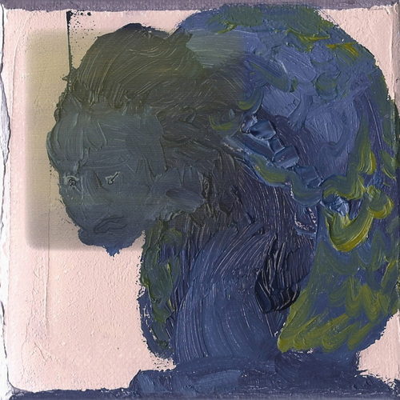

About | Music | Books | Poetry | Fiction | Nonfiction | Humor | Scholarship | Readings | Gizmos | Contact
Erik Moyer is a writer and data scientist from Hillsborough, New Jersey. He holds a PhD in creative writing from the University of North Texas, an MFA in writing from the University of California, Irvine, an MBA in business analytics from Florida State University, and a BS in systems engineering and poetry writing from the University of Virginia. His work appears in Columbia Journal, The New York Times, Oxford Poetry, The Pinch, The Rumpus, and elsewhere. His manuscript, How to Be Lonely, was a finalist for the 2025 Gerard Cable Book Award from Silverfish Review Press and a semifinalist for the 2026 First Book Contest from Button Poetry. His debut chapbook, A Time Series Analysis, is forthcoming from Gnashing Teeth Publishing. In past lives, he's worked as a university writing instructor, a varsity-certified umpire, and an emergency medical technician, and has done time in New Jersey, Virginia, Washington DC, California, and Texas. In his free time, he enjoys writing songs, playing chess, and convincing his cat, Xena, that shoelaces are, in fact, snakes. He lives in New York City.
Dead South, Erik Moyer, Spotify, LP, Indie Rock, Forthcoming, December 2027

Two-Minute Warnings, Erik Moyer, Soundcloud, Mixtape, Electronica, March 2025

Honest Thomas, Erik Moyer, Spotify,